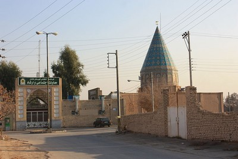

Peristiwa Syahidnya Umar bin al-Khattab (1/2)
Amirul mukminin Umar bin al-Khattab radhiallahu ‘anhu adalah figur pemimpin adil. Ia seorang yang kuat dan terpercaya (ber-integritas). Seorang mukmin mujahid dan wara’. Benteng akidah umat. Kepemimpinannya adalah curahan pelayanan. Umar berkhidmat untuk agama, keyakinan, dan rakyat.
Umar adalah kepala negara sekaligus panglima tertinggi militer. Laki-laki Quraisy ini juga berperan sebagai sosok ulama mujtahid yang jadi rujukan. Seorang hakim yang adil. Dan seorang ayah yang mengayomi. Ia adalah pelindung bagi mereka yang kecil dan dewasa. Yang lemah dan yang kuat. Yang miskin dan yang kaya. Keimanannya kepada Allah dan Rasul-Nya begitu terefleksi dalam kehidupan kesehariannya.
Banyak buku-buku politik membicarakan kepemimpinan Lincoln dan Kennedy. Atau juga tentang Gandhi dan perlawanannya terhadap Inggris. Kemudian pendapat-pendapat itu menyebar dan dikonsumsi generasi muda Islam. Lalu, tahukah mereka dengan Umar bin al-Khattab? Laki-laki yang membuat Persia bertekuk lutut dan Romawi kehilangan digdaya. Umar bin al-Khattab seorang politisi berkemampuan luar biasa. Pengalaman hidup menempanya menjadi super leader. Kecerdasan dan visinya menjadikannya sebagai super manager.
Kisah tentang kehidupan Umar begitu panjang dan mengesankan. Para penulis banyak menyajikannya dalam karya-karya mereka. Dan artikel kali ini hanya mengulas akhir kehidupannya. Sebuah kisah yang mengajarkan kepada kita, musuh itu tidak menampakkan hakikatnya begitu saja. Ia mungkin berbulu domba, tapi taring dan cakarnya setajam milik srigala.
Dialog Tentang Benteng Umat
Suatu hari, Umar bin al-Khattab berdialog dengan Hudzaifah bin al-Yaman, radhiallahu ‘anhuma. Hudzaifah adalah seorang sahabat yang banyak dibisiki rahasia umat oleh Rasulullah ﷺ. Hudzaifah berkata: Kami pernah duduk bersama ibn al-Khattab radhiallahu ‘anhu. Kemudian ia bertanya, “Siapa di antara kalian yang menghafal hadits Rasulullah tentang fitnah (perpecahan umat)?”
“Aku menghafalnya”, jawabku.
Kemudian ia berkata, “Coba sebutkan! Sesungguhnya engkau adalah seorang pemberani.”
“Aku mendengar Rasulullah ﷺ bersabda, ‘Fitnah seseorang pada keluarganya, hartanya, dan tetangganya bisa dihapuskan dosanya dengan shalat, sedekah, dan mengajak kepada yang makruf dan melarang yang mungkar’, jawabku.
Umar mengomentari, “Bukan itu yang ku-inginkan. Yang kumaksudkan adalah fitnah yang datang bergelombang seperti gelombang lautan!”
Umar bertanya tentang permasalahan besar yang silih berganti menimpa umat ini.
“Engkau tidak bermasalah dengannya wahai Amirul mukminin, sesungguhnya di antaramu dan fitnah itu ada pintu yang tertutup.” Jawabku. Artinya Umar tidak akan mengalami fase tersebut.
Umar bertanya, “Apakah pintunya didobrak atau dibuka?”
“Didobrak,” jawabku.
Umar paham, pintu yang didobrak, maka akan rusak. Tidak akan bisa ditutup kemabli. Ia berakta, “Didobrak itu lebih parah keadaannya. Karena selamanya ia tak akan tertutup. Hingga kiamat tiba”. Artinya perpecahan umat ini akan terus terjadi. Seperti gulungan ombak yang selalu susul-menyusul tiada berhenti. Menjadi tantantangan bagi umat Islam hari ini, mencari, manakah jalan kebenaran yang hakiki.
Kemudian orang yang meriwayatkan atsar ini dari Hudzaifah, Abu Wail, bertanya, “Apakah Umar tahu siapakah yang dimaksud dengan pintu itu?”
Hudzaifah menjawab, “Iya. Sebagaimana ia tahu penghalang hari ini dan esok adalah malam. Aku menyebutkan sebuah perkataan yang tidak ada kekeliruan.” Artinya Umar tahu persis akan hal itu.
Abu Wail mengatakan, “Kami suruh Masruq (Masruq bin Ajda, seorang tabiin) bertanya pada Hudzaifah. Ia pun bertanya, “Siapa pintu itu?” Hudzaifah menjawab, “Umar.”
Apa yang disampaikan oleh Hudzaifah bukanlah sebuah rekaan. Atau hanya prediksi yang dikarang. Tapi ia menyampaikan pesan dari Rasulullah ﷺ. Dan Umar bin al-Khattab pun paham, pintu itu adalah dirinya. Tentu ia tak akan lupa bahwa Rasulullah ﷺ menyebutnya sebagai syahid. Ia akan terbunuh.
قال أنس بن مالك رضي الله عنه: صعد رسول الله جبل أحد، ومعه أبو بكر و عمر وعثمان، فرجف الجبل بهم. فضربه رسول الله صلى الله عليه وسلم برجله، وقال له: “اثبت أُحُد: فإنما عليك نبيّ، وصديق، وشهيدان”.
Anas bin Malik berkata, “Rasulullah naik ke bukit Uhud bersama Abu Bakar, Umar, dan Utsman. Lalu Uhud bergetar. Rasulullah ﷺ menghentakkan kakinya ke Uhud dan berkata, ‘Tenanglah (jangan bergetar) Uhud! Sesungguhnya di atasmu ada seorang nabi, shiddiq (Abu Bakar), dan dua orang syahid (Umar dan Utsman).” (HR. al-Bukhari dalam Kitabul Fitan No. 7096).
Doa Umar
Dari Said bin al-Musayyib rahimahullah: Seusai dari Mina, Umar berada di suatu tempat lapang berkrikil. Di sana, ia taburkan pasir dan kerikil kecil ke kepalanya. Ia bentangkan kain lalu berbaring di atasnya. Kemudian mengangkat tangan ke langit sambil berucap, “Ya Allah, usiaku telah lanjut. Kekuatanku telah berganti lemah. Sementara kekuasaanku (tanggung jawabku) kian luas. Cabutlah nyawaku tanpa disia-siakan”. Kemudian ia kembali ke Madinah (Tarikh al-Madinah oleh Ibnu Syibh. Sanadnya shahih sampai kepada Said bin al-Musayyib, 3/872).
Peristiwa ini terjadi pada bulan Dzul Hijjah tahun 23 H. Ibadah haji terakhir yang dilaksanakan oleh Umar.
Dari Zaid bin Aslam, dari ayahnya, Umar bin al-Khattab radhiallahu ‘anhu pernah berdoa,
اللهم ارزقني شهادة في سبيلك، واجعل موتي في بلد نبيك
“Ya Allah karuniakanlah aku syahid di jalanmu. Dan wafatkanlah aku di negeri nabimu (Madinah).”
Dalam riwayat lain,
اللهم قتلًا في سبيلك ووفاة في بلد نبيك
“Ya Allah, aku meminta terbunuh di jalan-Mu dan wafat di negeri nabi-Mu.” (ath-Thabaqat oleh Ibnu Saad, 3/331. Sanadnya hasan).
Permintaan syahid berbeda dengan meminta disegerakan mati. Syaikh Ibnul Mibrad Yusuf bin al-Hasan bin Abdul Hadi rahimahullah mengatakan, “Jika ditanya apa beda meminta syahid dengan meminta kematian. Meminta kematian adalah meminta agar disegerakan wafat dari waktu semestinya. Sedangkan meminta syahid adalah meminta saat ajal datang diwafatkan dalam keadaan syahid. Ini bukan meminta disegerakan mati. Tapi meminta keadaan yang utama saat kematian itu datang.” (Mahadh ash-Shawab fi Fadhail Amirul Mukminin Umar bin al-Khattab, 3/791).
Khotbah Terakhir
Abdurrahman bin Auf radhiallahu ‘anhu meriwayatkan sebagian ucapan Umar bin al-Khattab radhiallahu ‘anhu pada khotbah Jumat tanggal 21 Dzul Hijjah 23 H. Dan inilah khotbah terakhirnya. Umar mengatakan, “Aku melihat dalam mimpiku, menurutku mimpi itu adalah tanda datangnya ajalku. Kulihat seekor ayam jantan mematukku dua kali. Lalu sebagian orang memintaku untuk menunjuk seorang khalifah pengganti. (ingatlah) Allah tidak akan menelantarkan agama-Nya, khalifah-Nya, dan syariat nabi-Nya. Apabila aku meninggal, maka urusan khilafah dimusyawarahkan oleh enam orang, yang saat Rasulullah ﷺ wafat, beliau ridha kepada mereka.” (al-Mausu’ah al-Haditsiyah Musnad al-Imam Ahmad, No. 89. Sanadnya shahih).
Maksud Umar, ketika dia meninggal. Enam orang tokoh sahabat yang diridhai Rasulullah ﷺ, bermusyawarah menunjuk siapa yang layak memegang amanah khilafah.
Tawanan Dilarang Tinggal di Madinah
Umar bin al-Khattab pernah menetepakan sebuah kebijakan strategis untuk Madinah. Ia melarang tawanan masuk ke ibu kota Daulah Khilafah. Tawanan dan budak dari Majusi, Irak, Persia, Nasrani Syam dilarang tinggal di Madinah. Kecuali jika mereka memeluk Islam. Kebijakan ini untuk menjaga stabilitas di Madinah. Keputusan yang menunjukkan betapa visioner dan kuatnya analisa Umar.
Menurut Umar, mereka adalah orang-orang yang kalah. Mereka memiliki hasad dan berpotensi bertindak ofensif. Umar khawatir mereka meramu sebuah strategi merusak stabilitas Daulah Islam. Namun sebagian sahabat Nabi ﷺ sangat membutuhkan jasa para budak ini untuk membantu mereka bekerja. Di antara mereka ada yang mengajukan perizinan tinggal untuk budak-budak itu. Dengan berat hati, Umar pun mengizinkannya (al-Khulafa ar-Rasyidin oleh Khalidi, Hal. 83).
Budak Itu Membunuh Khalifah
Amr bin Maimun bercerita tentang peristiwa pembunuhan Umar:
Pada suatu subuh, hari dimana Umar mendapat musibah, aku berada di shaf (menunggu datangnya shalat subuh). Antara aku dan Umar, hanya ada Abdullah bin Abbas. Apabila lewat antara dua barisan shaf, Umar berkata, “Luruskanlah shaf”.
Ketika dia sudah tidak melihat lagi celah-celah dalam shaf, ia maju lalu bertakbir. Saat itu, sepertinya Umar membaca surat Yusuf atau An-Nahl atau seperti surat itu pada rakaat pertama. (Karena panjangnya) memungkinkan semua orang bergabung dalam shalat. Ketika aku tidak mendengar sesuatu darinya, tiba-tiba kudengar ia berteriak dengan ucapan takbir, lalu berkata, “Ada orang yang telah membunuhku, atau katanya, “Seekor anjing telah menerkamku”. Rupanya ada seorang yang menikamnya dengan sebilah pisau bermata dua. Penikam itu melewati orang-orang di sebelah kanan atau kirinya sambil mengayun-ayun tikamnya. Akibatnya, tiga belas orang terluka. Tujuh diantaranya meninggal dunia. Melihat kejadian itu, seseorang dari kaum muslimin melemparkan mantelnya dan tepat mengenai si pembunuh. Sadar bahwa ia pasti tertangkap (tak lagi bisa menghindar), si pembunuh itu pun bunuh diri.
Umar memegang tangan Abdur Rahman bin Auf, lalu menariknya ke depan. Siapa saja yang berada di dekat Umar pasti meilihat apa yang aku lihat. Sementara orang-orang yang berada di sudut-sudut masjid, mereka tidak mengetahui peristiwa yang terjadi. Mereka hanya kehilangan suara Umar. Mereka berseru, “Subhanallah, Subhanallah (maha suci Allah).” Abdurrahman melanjutkan shalat jamaah dengan shalat yang pendek.
Seusai shalat, Umar bertanya, “Wahai Ibnu Abbas, lihat siapa yang menikamku.” Ibnu Abbas berkeliling sesaat lalu kembali, “Budaknya Mughirah”, jawab Ibnu Abbas.
Umar bertanya, “Pembuat gilingan itu? (Umar berisyarat kepada Abu Lu’lu’ah Fayruz, budaknya Mughirah bin Syu’bah)”. “Ya, benar”, jawab Ibnu Abbas.

Tempat yang dipugar orang-orang Syiah dan diklaim sebagai makam Abu Lu’lu’ah, yang nama aslinya Fayruz.
Terletak di Kota Kashan, Iran.Kemudian Umar menanggapi, “Semoga Allah membinasakannya, sungguh aku telah memerintahkan dia berbuat ma’ruf (kebaikan). Segala puji bagi Allah yang tidak menjadikan kematianku di tangan orang yang mengaku beragama Islam. Sungguh dahulu kamu dan bapakmu suka bila orang kafir non Arab banyak berkeliaran di Madinah.” Abbas adalah orang yang paling banyak memiliki budak.
Ibnu Abbas berkata, “Jika Anda menghendaki, aku akan lakukan apapun. Maksudku, jika kamu menghendaki kami akan membunuhnya.”
Umar berkata, “Kamu salah, (mana boleh kalian membunuhnya) mereka telah berbicara dengan bahasa kalian, shalat menghadap kiblat kalian, dan naik haji seperti haji kalian.” Kemudian Umar dibawa ke rumahnya dan kami pun ikut menyertainya.
Kemudian Umar disuguhi minuman nabidz (sari kurma), dia pun meminumnya. Namun sari kurma itu keluar lewat perutnya. Kemudian diberi susu, dia meminumnya lagi. Namun susu itu keluar melalui lukanya. Akhirnya orang-orang menyadari bahwa Umar akan wafat.
Kami masuk menjenguknya, lalu orang-orang berdatangan dan memujinya. Umar berkata kepada anaknya, Abdullah bin Umar, “Wahai Abdullah bin Umar, periksalah, apakah aku masih memiliki hutang”. Kemudian diperiksa oleh anaknya, ternyata Umar masih memiliki hutang sebesar 86 ribu atau sekitar itu.
Umar mengatakan, “Jika harta keluarga Umar mencukupi bayarlah hutang itu dengan harta mereka. Namun apabila tidak mencukupi, mintalah kepada Bani Adi bin Ka’ab (kabilah Umar). Jika harta mereka juga belum cukup, mintalah kepada masyarakat Quraisy. Jangan kesampingkan mereka dengan meminta kepada selain mereka. Lalu lunasilah hutangku dengan harta-harta itu.
Setelah itu, temuilah Aisyah, ummul mukminin. Katakan, ‘Umar memberikan salam untukmu’. Jangan sebut amirul mukminin. Karena aku bukan lagi amirul mukminin sejak hari ini. Katakan Umar bin al-Khattab meminta izin padanya untuk tinggal bersama kedua sahabatnya.
Abdullah bin Umar pun menyampaikan pesan sang ayah. Ia mengucapkan salam pada ummul mukminin, Aisyah, dan meminta izin masuk. Ternyata Abdullah bin Umar melihat Aisyah sedang menangis. Lalu ia berkata, “Umar bin al-Khattab menitipkan salam untuk Anda dan meminta izin agar boleh dikuburkan di samping kedua shahabatnya (Rasulullah ﷺ dan Abu Bakar radiyallahu ‘anhu).”
“Sebenarnya aku juga menginginkan hal itu untukku, namun hari ini aku tidak mementingkan diriku,” ucap Aisyah. Mendengar penerimaan Aisyah, Abdullah bin Umar segera mengabarkan kepada ayahnya yang sedang kritis.
Ada yang mengatakan, “Ini Abdullah bin Umar sudah tiba”. Umar beranjak ingin segera menerima kabar. Ia berkata, “Angkat aku”. Lalu ada seseorang datang menopangnya. Umar bertanya, “Berita apa yang kau bawa?” Ibnu Umar menjawab, “Berita yang Anda sukai, wahai amirul mukminin. Aisyah telah mengizinkan Anda”.
“Alhamdulillah, tak ada satu pun yang lebih penting bagiku selain itu. Jika aku telah meninggal, bawalah aku ke sana dan ucapkan salam. Katakan Umar bin al-Khattab meminta izin. Kalau dia mengizinkan, maka masukkanlah aku. Namun apabila dia menolakku, makamkanlah aku di pekuburan kaum muslimin,” kata Umar.
Amr bin Maimun mengatakan, “Keitka Umar wafat, kami pun berjalan menuju ke sana. Abdullah bin Umar mengucapkan salam. Ia berkata, ‘Umar bin al-Khattab meminta izin’. ‘Masukkan dia,’ jawab Aisyah. Jasad Umar pun dibawa masuk. Kemudian ia dimakamkan bersama dua orang sahabatnya, (Rasulullah ﷺ dan Abu Bakar) (Riwayat al-Bukhari dalam Kitab Fadhl ash-Shahabah, No.3700).
Dalam riwayat lain, Ibnu Abbas radhiallahu ‘anhuma mengisahkan, “Umar ditikam di pagi hari. Yang menikamnya adalah Abu Lu’lu’ah, budak dari Mughirah bin Syu’bah radhiallahu ‘anhu. Abu Lu’lu’ah adalah seorang majusi.”
Abu Rafi’ radhiallahu ‘anhu mengatakan, “Abu Lu’lu’ah adalah budak milik Mughirah bin Syu’bah. Ia bekerja membuat penggilingan yang dijalankan dengan tangan. Sebagai tuannya, Mughirah menetapkan mengambil uang sebanyak 4 dirham darinya. Lalu Abu Lu’lu’ah mengadukan hal ini kepada Umar, ‘Wahai amirul mukminin, sungguh Mughirah memberatkanku. Bicaralah kepadanya agar memberi keringanan untukku’.
Umar menanggapinya dengan mengatakan, ‘Bertakwalah kepada Allah. Berbuat baiklah (ma’ruf) kepada tuanmu’. Dihadapan Abu Lu’lu’ah, Umar berbicara demikian untuk menenangkannya. Tapi ia juga berencana berbicara dengan Mughirah agar memberi keringanan untuk Abu Lu’lu’ah. Namun si budak tidak menerima masukan Umar. Ia marah. Ia bergumam, ‘Keadilannya untuk semua orang kecuali aku!’ Ia pun berazam untuk membunuh Umar.
Sejak itu, ia membuat khanjar (belati Arab) yang memiliki dua mata. Lalu ia asah tajam-tajam. Setelah itu ia temui Hurmuzan (pembesar Persia) dan berakta, ‘Apa pendapatmu tentang ini?’ Hurmuzan mengomentari, ‘Menurutku, tidak seorang pun yang kau pukul dengan benda itu kecuali membunuhnya’.
Kemudian Abu Lu’lu’ah mengawasi Umar. Ia mendekat hingga berada di belakang Umar saat shalat. Umar biasa mengatakan ‘luruskan shaf kalian’ apabila shalat hendak ditegakkan. Ketika Umar mengucapkan takbir, Abu Lu’lu’ah menghujamkan (khanjar) di ketiak Umar. Kemudian lagi, di pinggangnya. Umar pun terjatuh.”
Amr bin Maimun mengatakan, “Saat ditikam itu aku mendengar Umar membaca:
وَكَانَ أَمْرُ اللَّهِ قَدَرًا مَقْدُورًا
“Dan adalah ketetapan Allah itu suatu ketetapan yang pasti berlaku.” (QS:Al-Ahzab | Ayat: 38) (Shahih at-Tautsiq fi Sirati wa Hayati al-Faruq, Hal: 369-370).
Setelah ditikam, tiga hari kemudian Umar bin al-Khattab wafat.
Di tulisan berikutnya, insya Allah akan dicuplikkan saat-saat akhir kehidupan Umar. Usia dan tanggal wafatnya. Prosesi pemandian dan shalat jenazahnya. Siapa saja yang menyalatkannya. Pemakamannya. Hingga pelajaran yang dapat dipetik dari peristiwa wafatnya. Insya Allah…
Sumber: Tulisan Ali ash-Shalabi yang berjudul Istisyhad Umar bin al-Khattab radhiallahu ‘anhu.